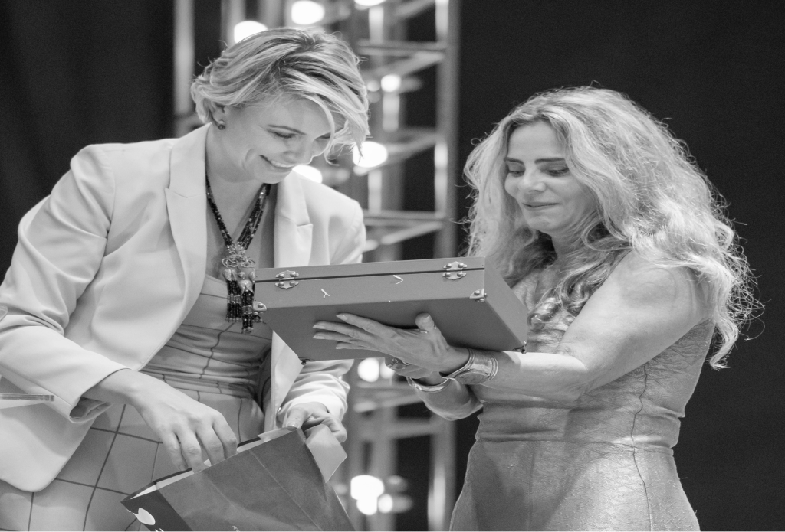

Liderança, culturae comportamentohumano conectados àsdecisões do negócio.
Palestrante, mentora, consultora e fundadora da Virtù. Desde 2012, atua no desenvolvimento de pessoas e organizações, aproximando os desafios de crescimento da forma como líderes e equipes trabalham.
CONHEÇA AS PALESTRAS
↗
Uma trajetória construídaentre o negócio e as pessoas que fazem parte dele.
Veridiana Cavalheri é administradora de formação e dedica sua atuação à relação entre crescimento, cultura organizacional e comportamento humano. Desde 2012, conduz projetos corporativos que aproximam essas frentes em empresas de diferentes setores.
Sua experiência reúne mentorias com empresários e executivos, jornadas de desenvolvimento de lideranças, consultorias e palestras. Ao transitar por esses formatos, trabalha tanto com as decisões de quem conduz o negócio quanto com as habilidades de quem precisa colocá-las em prática.
O repertório inclui atuação no agronegócio, na indústria e em serviços. Em cada contexto, a proposta é compreender o que a organização precisa desenvolver e relacionar esse desafio à cultura, à gestão e ao comportamento das pessoas.
Essa perspectiva também orienta a Virtù, empresa que fundou para reunir suas jornadas de desenvolvimento humano e organizacional.
A forma de lideraraparece emcada conversa,escolha e entrega.
Como uma decisão é comunicada? O que acontece quando alguém erra? Quais atitudes são reconhecidas? Quanto espaço a equipe tem para assumir responsabilidades?
Essas situações ajudam a revelar a cultura de uma empresa. Para Veridiana, desenvolver a liderança envolve olhar para o modo como gestores influenciam o ambiente, orientam as pessoas e respondem aos desafios do trabalho.
Sua atuação conecta essa dimensão humana à estratégia, aos processos e à gestão. A proposta é ampliar a consciência sobre o próprio comportamento e desenvolver práticas que ajudem a equipe a trabalhar com mais clareza.
“Pessoas de valor criam empresas de valor; empresas de valor criam um mundo virtuoso e próspero.”
Compreender o cenário, desenvolverpessoas e acompanhar a aplicação.
O perfil de atuação de Veridiana apresenta quatro pilares que conectam a leitura do contexto à construção de práticas de gestão. A presença de cada etapa depende do formato e do escopo contratado.
01
Assessment — Compreendero ponto de partida
Observar o cenário da organização, reconhecer pontos fortes e identificar o que precisa de atenção. Essa leitura ajuda a direcionar prioridades de desenvolvimento.
02
Ecossistema inteligente —Conectar cultura e gestão
Relacionar os princípios da organização aos processos de gestão de pessoas, buscando coerência entre o que a empresa espera e a maneira como o trabalho acontece.
03
Formação — Desenvolverlíderes e equipes
Trabalhar habilidades de liderança e inteligência comportamental em conexão com as responsabilidades e os desafios dos participantes.
04
Resultados —Acompanhar o que muda
Observar a aplicação do trabalho e os indicadores definidos para a jornada, reconhecendo avanços e pontos que pedem continuidade.
Do palco às decisões de gestão.
01
Palestras para eventose encontros corporativos
Conteúdos sobre liderança, comunicação, performance e autoliderança feminina. Uma oportunidade de reunir o público em torno de temas que fazem parte de sua realidade e estimular novas reflexões.
02
Desenvolvimento de lideranças
Jornadas que trabalham cultura, gestão de equipes, inteligência comportamental e comunicação, aproximando o aprendizado das situações enfrentadas pelos gestores.
03
Mentoria para empresários e líderes
Orientação para discutir desafios, rever práticas e construir caminhos de gestão com quem participa das decisões. Um espaço de trabalho sobre pessoas, liderança e organização do negócio.
04
Consultoria em culturae gestão de pessoas
Projetos voltados à estruturação de processos e práticas que conectam a cultura à jornada das pessoas dentro da empresa.
CONHEÇA AS JORNADAS DA VIRTÙ
↗
Estudo e prática fazemparte da mesma trajetória.
Graduada em Administração de Empresas, Veridiana reúne formações em gestão, coaching e comportamento humano. Seu percurso de estudos inclui coaching executivo, de negócios e de equipes, análise comportamental DISC e coaching generativo.
Entre 2012 e 2020, também atuou como instrutora na formação de profissionais de coaching. Essa experiência integra seu repertório de condução de grupos e desenvolvimento de pessoas.
Na atuação corporativa, esses conhecimentos se encontram com as situações apresentadas pelas empresas: decisões sobre liderança, relações de trabalho, cultura e organização das equipes.
Antifraca: uma conversasobre a força de conduzira própria história.
Veridiana é autora de Antifraca e lidera o movimento de mesmo nome, dedicado aos desafios da liderança e do empreendedorismo feminino.
Essa frente de seu trabalho abre espaço para refletir sobre diálogo interno, escolhas, coragem e autoliderança. O convite é reconhecer recursos pessoais, pensar sobre a própria trajetória e dar lugar, na rotina, aos próximos passos que se deseja construir.
A obra também fundamenta a palestra EU — A força inabalável de ser, voltada ao público feminino.
Encontros que ampliam essa conversa
Veridiana também idealizou Woman Mato Grosso e One Day Mato Grosso, projetos que fazem parte de sua atuação com eventos, empreendedorismo e desenvolvimento.
CONHEÇA A PALESTRA PARA MULHERES
↗

Contextos diferentesampliam o olharsobre liderança.
A trajetória profissional de Veridiana inclui trabalhos com organizações do agronegócio, cooperativas financeiras, indústria e serviços. Essa diversidade de contextos compõe seu repertório sobre os desafios de conduzir pessoas e desenvolver a gestão.
Em cada projeto, o ponto de partida é a realidade da organização: sua cultura, suas prioridades e as pessoas envolvidas no trabalho.


Qual conversa sua equipe precisa ter? E o que sua liderança precisa desenvolver?
Leve Veridiana ao seu evento ou conheça as possibilidades de trabalho com a Virtù. Conte sobre o público, os desafios e o momento da sua organização para identificar o formato adequado.
FALE COM A EQUIPE DE VERIDIANA
↗